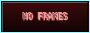
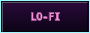

curator's note
A shrine, on the old web, was a page devoted to one thing you loved without irony. Nobody asked for it. It did not need a business model. It existed because somebody wanted to put every fact they knew about, say, hedgehogs in one place and decorate the margins with tiny GIFs.
This is my version. Four rooms. Everything in them has earned its place by being personally important, not by being popular. Please look closely and then go make your own.
room one — the tea shrine
Ranked, defended, and open to argument in the guestbook.
the roadside glass
Boiled until it surrenders. Served so hot it is technically a negotiation. The correct amount of sugar is “more”.
aunt's masala chai
Cardamom, ginger, a clove, and one secret thing nobody will confirm. Best drunk at 4pm while the ceiling fan argues.
train tea
Arrives in a clay cup. Tastes faintly of the cup, which is the point. Costs ₹10 and fixes the whole journey.
sulaimani
No milk, lemon, mint, and a small amount of drama. For evenings when the rain has made the plan for you.
the modern invader
I do not understand it. My younger cousin defends it with her whole chest. I respect the energy, not the pearls.
black, no sugar
My father's order for 40 years. Two words, said with total confidence, at any hour, in any town.
The ginger rule. If a stall keeps its ginger whole and sliced, not powdered, it is a serious establishment. This rule has never failed me. Write it down.
room two — the frog wing

Meet Pacha. She is the mascot of this site and was drawn at 2am in a pixel editor, which is why she has one more toe on the left foot than a frog should have. I have decided this is a feature.
Why a frog? Because during the monsoon they arrive and occupy the bathroom and act like they pay rent. Because they are a perfect animal: round, waterproof, extremely loud about nothing. Because a frog on a website is not a brand and never will be.
Rights: the frog is free to use for personal sites. Please do not put her on a product.
pacha
The mascot. Guardian of the guestbook. Umbrella is a permanent fixture.
the bathroom frog
Unnamed. Arrives every June. Sits in the corner like a small green landlord.
tree frog chorus
At 2am in the rain it is either the most beautiful sound on earth or a war crime. Context dependent.
frog & the floppy
A 1990s CD-ROM character I refuse to name because he is a corporate logo and Pacha is not.
room three — lo-fi machines
No audio files are stored here. The first machine plays live in your browser; the second is a written memory of a sound you already know.
the rain machine
Two seconds of brown noise, filtered, with a slow swell. Genuinely pleasant on headphones.
the modem, remembered
A dial tone, a handshake, a shriek, and then — if nobody picked up the phone — the whole internet.
two MIDIs, 2009
Recovered from the hard drive in note #04. One is a waltz played by a robot that has never met a waltz. The other has a pan flute and no shame.
Load-bearing sounds of the houses I grew up in: the pressure cooker (four whistles, exact), the gate with the specific squeak, the mixer grinder at 6:40am on Sundays, rain on the tin extension, and the television being turned down so somebody could tell you something.
room four — artefacts of the old web
the 88×31 button
A whole identity in 2,728 pixels. The currency of the link exchange economy.
<marquee>
Deprecated, inaccessible, beloved. This site contains exactly one and it is paused when you hover it.
the guestbook
Proof that a stranger was here and had an opinion about your layout.

frames
A layout technique, a navigation paradigm, a war. We do not speak of the third frame.
view source
The greatest teaching tool ever shipped by accident. Still works. Go on, try it on this page.
feeds
You subscribe to me, not the other way round. Notifications only when I actually wrote something.

dithered images
256 colours and a dream. Compression artefacts as an aesthetic, before anyone called it that.
the local web
Pages from people in your own city. Somebody nearby, writing about the same rain.


the wall is decorative. the real exchange happens in the guestbook.